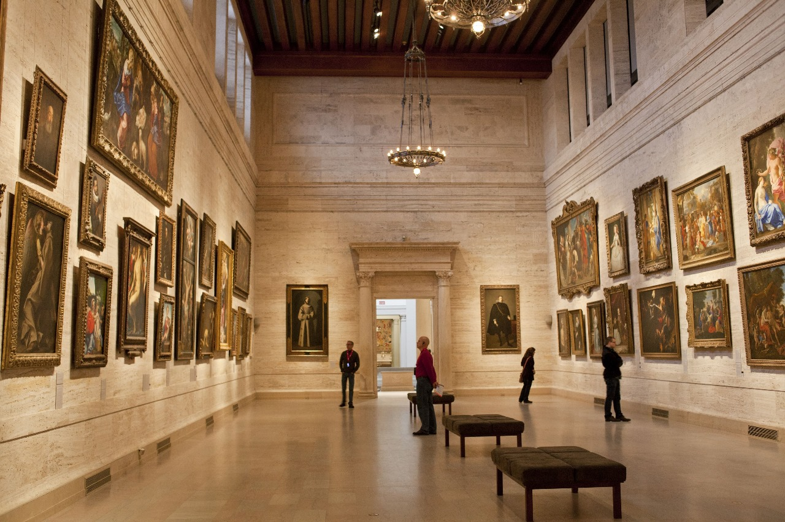

Welcome to the Nagpur National Museum, a treasure trove of history, art, and culture nestled in the heart of Nagpur.
Our museum is dedicated to preserving and showcasing the rich heritage of the region, offering visitors a journey
through time with our extensive collection of artifacts, exhibits, and interactive displays. Come explore and discover the stories that have shaped this vibrant city.



Plan Your Visit
Museum, Nagpur - 440018
Timings: Mon-Fri (10:00 AM to 7:00 PM)
(Closed on Sun-Sat and National Holidays)
Entry Fee: Adults: ₹20 | Foreign Nationals: ₹500
Students up to class 12th: Free entry (with I-cards)
Upcoming Museum Events
Art and Culture Workshops
Our museum offers a wide variety of workshops on art, culture, and history.
These workshops are designed to give visitors a hands-on experience with some of our collections.
Upcoming workshops include pottery, painting, and textile crafting.
Date: Every Saturday from 10:00 AM to 12:00 PM
Guided Tours
Join our expert guides for in-depth tours of our most popular exhibits.
Tours are available in multiple languages and cover both the permanent collections and rotating exhibitions.
Timings: Daily tours at 11:00 AM and 3:00 PM
Programs for Kids
We offer fun and educational programs for children that encourage them to explore art and history in an engaging way.
Our kids’ programs are interactive and include storytelling, scavenger hunts, and creative activities.
Age Group: 5-12 years
Schedule: Every Sunday from 2:00 PM to 4:00 PM
About the Museum
History
The Nagpur National Museum was established in [Year] with the mission of preserving and showcasing the rich cultural and historical heritage of the region. Over the years, it has grown into one of the leading museums in [Country/Region], offering an extensive collection of artifacts and exhibits that span various historical periods.
Exhibits
- Ancient Artifacts: Discover relics from ancient civilizations, including pottery, sculptures, and tools.
- Medieval Art: Explore artworks from the medieval period, including paintings and manuscripts.
- Local History: Learn about the local history and heritage of Nagpur through interactive displays and exhibits.
- Special Exhibitions: Visit our rotating special exhibitions that feature unique themes and collections.
Location
The museum is located at [Street Address], Nagpur - 440018, India. It is easily accessible by public transport and offers ample parking for visitors.